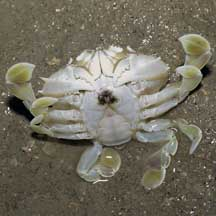
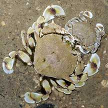
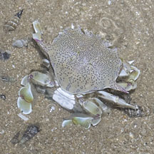
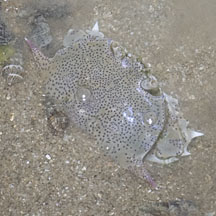
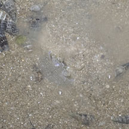
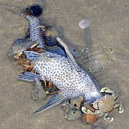
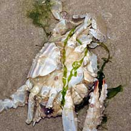
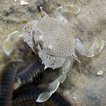

|
|
| crabs text index | photo index |
| Phylum Arthropoda > Subphylum Crustacea > Class Malacostraca > Order Decapoda > Brachyurans |
| Moon
crabs Family Matutidae updated Dec 2019 Where seen? These crabs as pale and circular as a full moon are commonly encountered on our Northern shores. They are more active at night and are rarely seen by daytime visitors as they are then often buried in the sediments. |
 All the legs of the Moon crab are flattened into paddles. Changi May, 05 |
 About to mate? |
 With eggs. St. John's Island, Feb 24 Photos shared by Marcus Ng on facebook. |
| Features: Body somewhat circular with a pair of long spikes on the sides. Pincers short, sturdy, held against the body to form a somewhat box-like shape. All walking legs end in paddle-shaped tips and used to skim along the sea bottom and also like spades to rapidly burrow into the sand. With eight little spades rotating rapidly, the crab disappears into wet sand in an eyeblink. The sturdy pincers grab any edible bits that the crab can handle. |
 Tanah Merah, Jul 11 |
 Buries itself in an eye blink. |
 |
| What do they eat? They eat worms,
clams and other small animals, foraging more actively at night. A
juicy dead fish, however, may lure them out of hiding even during
the day. Human uses: These crabs are eaten in some other countries. Status and threats: Our moon crabs are not listed among the threatened animals of Singapore. However, like other creatures of the intertidal zone, they are affected by human activities such as reclamation and pollution. Trampling by careless visitors also have an impact on local populations. |
|
 Swarming over a recently dead fish. Tanah Merah, Jul 10 |
 A huge dead crab, bliss! Changi, Oct 08 |
 Tiny one eating an injured worm. Chek Jawa, Feb 02 |
| Some Moon crabs on Singapore shores |


| Family
Matutidae recorded for Singapore from Wee Y.C. and Peter K. L. Ng. 1994. A First Look at Biodiversity in Singapore *Tan, Leo W. H. & Ng, Peter K. L., 1988, A Guide to Seashore Life. **Ng, Peter K. L. and Daniele Guinot and Peter J. F. Davie, 2008. Systema Brachyurorum: Part 1. An annotated checklist of extant Brachyuran crabs of the world. +added from our observation
|
|
Links
References
|